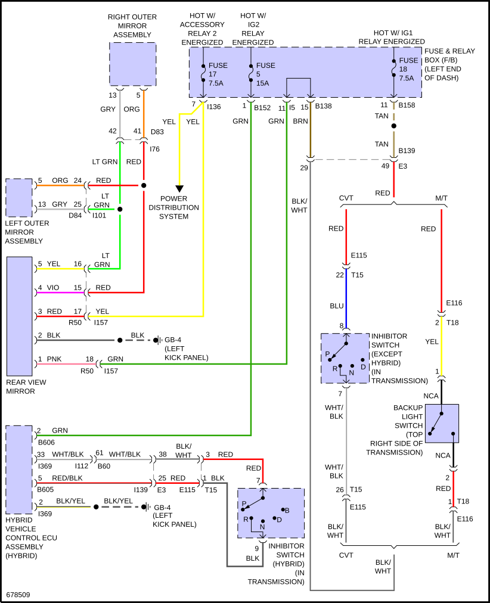

Dogeware Lemon Mirror
: A 3rd Party Backup of CHARM + LEMON Car Manuals
Home
>>
Subaru
>>
2019
>>
Crosstrek Limited
>>
Repair and Diagnosis (Single Page)
>>
Electrical
>>
Wiring Diagrams
>>
System Wiring Diagrams
>>
Power Mirrors
Power Mirrors
Do you like it dark? Easier on the eyes.
Fig 1: Automatic Day/Night Mirror Circuit

Fig 2: Power Mirrors Circuit